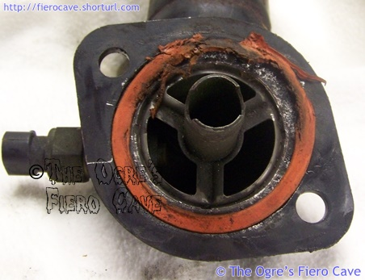
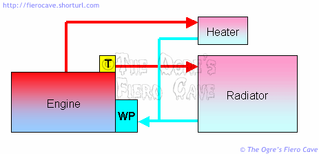

Go Home
Site Map
Go Home
Site Map
Thermostats
Notes:
You don't need all of air out but only to make sure lower Tstant is covered with coolant so the Tstant and sensors/senders read coolant temp.
Bad cap or bad areas on the housing can cause even new caps to fail to seal But Good parts can fake problems because can take 1 to several heat cycles to purge air out of system.
Stant SuperStat® Thermostat
Unlike conventional thermostats that continually open and close to achieve the proper operating temperature and flood the engine with coolant, the Stant SuperStat® thermostat has a patented v-notch, non-linear design that reduces cycling by precisely metering the amount of coolant needed to maintain proper operating temperature.
Source: Stant Brochure
- 195° use Part # 45819
- 180° use Part # 45818
Old # are still good but new # are better. You likely have to order it. Advance Auto and Amazon can get it.
Stant now has a good FAQ... see ABCs of Thermostats and Frequently Asked Questions
Installation
How hard is that? You just shove it down the hole... They should all be this easy.
One small thing people over look... When installing Fiero or similar thermostats, coat the O-ring on it with a film of petroleum jelly or better yet, silicone oil/grease. Dielectric compound and brake grease are both good. You only need enough to leave a film on the ring.
If you don't lube the O-ring, the coolant usually isn't slick enough and the thermostat won't want to seat or you tear the O-ring. I suspect this is how many thermostats end up bent.
You have to use firm pressure, and sometimes a little wiggling helps, but you shouldn't have to force them down the hole. When it's fully seated, the frame will not obstruct the cap. If a lubed thermostat won't seat, suck out some coolant and inspect the neck. Look for corrosion or dents in the seating area. Push in the thermostat and see if the neck is out of round.
You'll also find it easier to install the cap if you put a film of lubricant on the rim of the thermostat neck. That will let the rubber slide easier and help prevent corrosion.
If the rim is corroded, clean it with fine sand paper and coat all the cleaned area with silicone grease. (Dielectric or Brake grease) The silicone won't easily rinse away like most petroleum products and it won't react with the coolant or the cap. Paint could actually bond the cap on. You should probably replace the cap. A corroded rim often damages the seal.
Thermostat housing gasket
L4 have two types of housings... If L4 Tstat housing has a thick flat flange then Fel Pro and other caskets won't work and you can't get new silicon "o-ring." I made one from flat cork supply, apply with a little bit of RTV and then let RTV to cure for 2-3 days.

New style Housing Flage and Gasket for L4.
The thermostat cap keeps sticking...
This is annoying to say the least. To prevent this, clean the thermostat neck and coat the rim with a silicone product like Brake Grease. Coat anything the cap touches or covers. Brake Grease won't wash out easy and it won't damage the rubber seal on the cap.
Tstat collapse
This is an odd problem that has come up a few times now. I think in most cases the Thermostats are being damaged during installation. After rereading some threads and update posts by a couple people I think there's another factor, plugged or damaged heater plumbing.
Something many people don't know, and many of the rest of us forget, is that the heater and cooling system are parallel circuits. The Thermostat regulates flow to the radiator. When the system is cold, and the thermostat closed, all the coolant flow is thru the heater. If the heater is blocked, that pressure has to go someplace.
Below is a typical plumbing map for a cooling system. In the real world, the heater can be fed from almost anywhere on the engine. For TBI and Carburetor motors, it's common to feed the heater from an outlet on the intake manifold. This is how the Fiero DIS L4 motor is done. The outlet on the manifold also allows heating the intake to prevent fuel from pooling below the TBI. I'm not sure where the heater outlet is on the V6.

If you're lubing the thermostat O-ring etc, but the thing still collapses, try bypassing the heater core. Also check under the car to make sure nothing whacked the heater plumbing.
It's actually a good thing that the thermostat can collapse when the engine is over pressured because of a heater problem. Otherwise you'd have something break, which happens in other cars. As it is, this could also be part of why people are having problems with durability of the water pump. With the size of the Fiero cooling system, it wouldn't take much to overload the pump.
Why does the ECM sensor report higher temperature than the thermostat set point, even when mounted in the thermostat housing?
While the value of the thermostat is one temperature, the temperature of the sensors and block are often something else.
- The coolant is always a little hotter than the thermostat value. Remember thermostat value is just the number at which the thermostat is open. It's not the actual temperature of the coolant.
- The engine speed, vehicle speed, and fan activation, all affect the engine cooling. Low air or coolant flow will quickly increase coolant temperature above the thermostat value.
- The cast iron itself is not a great heat conductor. Areas not in direct contact with the coolant will be hotter than the areas that are touching. Dirt and corrosion in the block add to this.
- Coolant flow is different throughout the block. Some of this is intentional some is not. There is only so much space to make into water jacket and not make the head or block very weak.
Alternate Thermostats
There have been a number of questions regarding the use of alternate thermostats in Fiero. Here's a bit of data.
A thermostat is required for all EFI motors to operate correctly. It's not an option any more. An EFI system without a thermostat will have problems. Fuel Mileage, performance, and reliability will all be affected.
There are 3 thermostat choices commonly used. Others may exist, but are custom work. Additionally there are some things to keep in mind when selecting a thermostat. For the purpose of this article we'll lock the radiator fan on full time. That way we know the air is always moving, and that only the thermostat controls the temperatures we are seeing.
There are a couple different temperatures we are concerned with monitoring when we work with thermostat selections. The first is obviously the thermostat set point. Set point is the temperature when the thermostat is fully open. The second is not as obvious, and requires a tool.
This second number is the engine temperature reported to the ECM. There are 2 reasons we need to know the ECM temperature reading. First is that the engine will not operate properly unless the ECM thinks the block is within a specific heat range. Second is that the ECM reading and the Thermostat set point is never the same thing. The ECM sensor will typically be reading temperatures 10-20 degrees above the thermostat value.
So with all that in mind we have a table of data that end up looking like this.
| Tstat | ECM reads | Pro | Con | Source |
|---|---|---|---|---|
| 195° | 200-220° | Lots of heat in winter. | May over heat more easily. | Any parts store or Kmart Wal-Mart etc. Stant part # 35819 |
| 180° | 185-195° | Can improve performance. DOES NOT require ECM reprogramming. Can help some engines that "spark knock" easily. | May not get enough heat in winter. | Any parts store. Stant part # 35818 |
| 160° | ? haven't tested. | Can improve performance. | Requires reprogrammed ECM PROM to run properly. | Nonstandard part. Performance or specialty dealer only. |
Your choices for a stock programmed ECM/PCM are usually 180° or 195°. The carmakers all install 195° at the factory for fuel efficiency and emissions reasons.
What does a lower temperature thermostat do?
Well for one thing, because the engine doesn't run as warm with a cooler thermostat, the intake manifold stays cooler and keeps the intake charge cooler. The cooler charge is denser so more air/fuel mix fits in the same space. If more air and fuel can enter the cylinder then the engine makes more power.
Why does the 160° thermostat require reprogramming the ECM?
Because the 160° thermostat can keep the block temperature so low that the ECM thinks the engine is cold. When the ECM thinks the engine is cold it can run in Open Loop mode. In Open Loop mode the fuel/air mix is not at optimum, and while you may get a bit of performance, you waste allot of gas. In Open Loop mode the engine will always run a little rich. This rich mix is chosen because a lean mix can actually destroy the engine. The requisite PROM change reprograms the ECM to use Closed Loop mode at a lower temperature. This problem is caused entirely by the thermostat. Using a low temp fan switch with a 180° or 195° thermostat will not cause ECM problems.
Just how much reprogramming may be needed depends on the specific setup and the ECM involved. In some cases the ECM may tolerate the 160° thermostat without reprogramming. The only way to be sure of this is to monitor the ECM data stream in real time. You would need ECM scan tool to really see if ECM cares about ECT or not in Close Loop mode. Example: 87 DIS Duke will go Close Loop very fast even engine is freezing. Takes 30 sec - 2 minutes in the winter for O2 to warm up and sends a good signal.